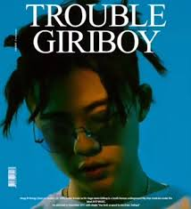

그의 특징

I'm in trouble
니가 나의 신발과
같은 것을 신는 사진
난 봤어
요즘 유행 따라간 게
아니었다면 난 피곤하겠어
혹시 니가 나를 신기하게 봐서
하루 종일 나를 수소문 한다면
내 입은 귀에 걸려
조커가 된 것 같아
악당은 싫은데
망했어 망했어
I'm in trouble (위험해 비상사태)
I'm in trouble (니가 날 터치할 때)
I'm in trouble (oh no)
I’m in trouble (낚시바늘 입에 닿을 때)
I'm in trouble (난 생각에 잠기네)
I'm in trouble (oh no)
(다신 나를 찾지 말길 바래)
만약 니가 했던 모든 것이
나를 의식했던 거면
기분이 너무 좋아졌지만
우물에 빠지긴 싫어
혹시 니가 나를 신기하게 봐서
하루 종일 나를 수소문 한다면
내 입은 귀에 걸려
조커가 된 것 같아
악당은 싫은데
망했어 망했어
I'm in trouble (위험해 비상사태)
I'm in trouble (니가 날 터치할 때)
I'm in trouble (oh no)
(나의 외로운 밤을 건든다면)
I'm in trouble (낚시바늘 입에 닿을 때)
I'm in trouble (난 생각에 잠기네)
I'm in trouble (oh no)
(다신 나를 찾지 말길 바래)
난 안간힘을 써 고개가 돌아가기 전에
자꾸만 니가 정성스레 빚어놓은 떡에
냄새가 너무 좋아 눈이 감겼지만
눈꺼풀 안에 동공은 계속 이래저래
입 꼬리는 계속 올라가지만 (I'm in trouble)
초침은 계속 돌아가지만 (I'm in trouble)
난 발바닥에 본드칠을 했거든
힘을 주면 금방 떨어지지만
너의 휴대폰에 액정에
빛이 들어오게 해서
나를 보여줄 수 있지만
악당이 되긴 싫어
그러니까 그런 눈으로
나를 계속 찍지마
기분이 좋아도
술은 절대로 안 마셔
입에 대기만 해도 아마도
한 시간 안에 바뀌거든 악마로
혹시 니가 나를 신기하게 봐서
하루종일 나를 수소문 한다면
내 입은 귀에 걸려
조커가 된 것 같아
악당은 싫은데
망했어 망했어
I'm in trouble (위험해 비상사태)
I'm in trouble (니가 날 터치할 때)
I'm in trouble (oh no)
(나의 외로운 밤을 건든다면)
I'm in trouble (낚시바늘 입에 닿을 때)
I'm in trouble (난 생각에 잠기네)
I'm in trouble (oh no)
(다신 나를 찾지 말길 바래)